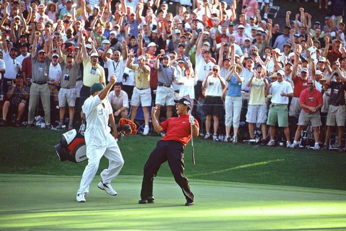

Overview
The Masters Tournament, held annually at Augusta National Golf Club, is one of the most prestigious golf tournaments in the world.
- Here is a brief history of this iconic event:
- First tournament held in 1934
- Traditionally played in early April
- Renowned for its green jacket awarded to the winner
- Here is a list of the most winningest participants:
- Jack Nicklaus - 6 wins
- Tiger Woods - 5 wins
- Arnold Palmer - 4 wins
Historical Highlights
Some of the memorable moments from past tournaments include:
- Gene Sarazen's double eagle on the 15th hole in 1935
- Jack Nicklaus' record 6 wins between 1963 and 1986
- Tiger Woods' historic victory in 1997

Tiger Woods' legendary fist pump after winning the 1997 Masters Tournament
Watch Now
Watch the most dominant performance in the history of the tournament:
Data Visualization